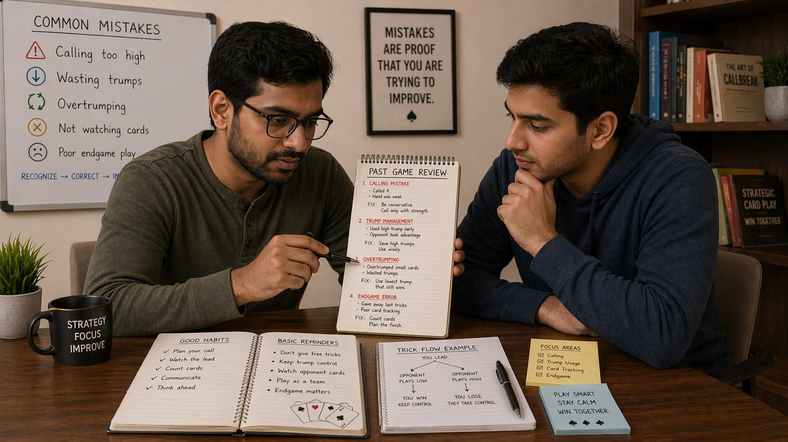

🪶 Introduction
Every Callbreak player, regardless of experience level, makes mistakes. The difference between players who improve quickly and those who plateau is their ability to recognize, analyze, and correct recurring errors.
This guide covers the most common mistakes in Callbreak — from calling errors to trick-taking mechanics — and explains exactly how to address each one.
🖼️ Callbreak Common Mistakes Overview

🎯 Why Mistakes Matter in Callbreak
Callbreak rewards consistency. Unlike games where one lucky play can swing the outcome, Callbreak punishes repeated errors. Even small mistakes compound across 13 tricks per round and multiple rounds per game.
The good news: most Callbreak mistakes fall into a few predictable categories. Once you can identify them in your own play, you can consciously work to eliminate them.
📈 Overcalling: The Most Common Mistake
New players tend to overestimate the strength of their hands, leading to inflated calls that their team cannot fulfill.
Why This Happens
When looking at your 13 cards, it is easy to focus on high cards and ignore distribution issues. An Ace looks strong, but if it is accompanied by low cards in other suits, your actual trick-winning potential is limited.
The Fix
Before calling, systematically evaluate:
- How many tricks can I realistically win if the cards fall average?
- Do I have enough trump cards to cover situations where I cannot follow suit?
- Is my hand balanced across suits or concentrated in one area?
Calling 3 with a weak hand because you hold one Ace is a recipe for losing points. Conservative, accurate calling builds trust with your partner and keeps your score stable.
🃏 Wasting Trump Cards at the Wrong Time
Trump cards are powerful, but they are also finite. Playing them carelessly on low-value tricks often costs you critical tricks later.
Why This Happens
The excitement of winning a trick leads players to use trump whenever they cannot follow suit, even when the trick being won is not particularly valuable.
The Fix
Before playing trump, ask yourself:
- Is this trick worth winning at the cost of a trump card?
- Will winning this trick directly contribute to fulfilling my call?
- Do I have enough trump remaining to handle situations later?
If the answer is unclear, it is usually better to discard a low non-trump card and preserve your trump for a more important moment.
👀 Ignoring What Has Been Played
Callbreak is a game of incomplete information, but the cards already played provide valuable clues. Ignoring them is a significant disadvantage.
The Fix
Develop a habit of briefly acknowledging every card played:
- Which cards have appeared in each suit?
- Has the trump suit been played heavily or minimally?
- Did opponents win tricks early with unexpected card values?
This information helps you infer what cards opponents might hold and adjust your strategy accordingly.
🤝 Not Supporting Your Partner's Call
When your partner makes a high call, your play strategy should shift to support them. Ignoring their call and playing independently is a common team error.
The Fix
When your partner calls high:
- Adjust your play to preserve strength in suits they are likely to lead
- Avoid playing high cards in suits they need unless you are trying to win a specific trick
- Communicate through your cards: playing aggressively or passively signals your intentions
🎴 Leading with the Wrong Suit
As the first player to lead a trick, you set the agenda. Leading the wrong suit can hand your opponents free tricks or waste your strongest suits prematurely.
The Fix
Before leading, assess:
- Do I have high cards in this suit that can actually win tricks?
- Is my partner likely to have strength in this suit?
- Would leading a different suit better set up my partner's strategy?
⚖️ Playing Too Aggressively or Too Passively
Finding the right balance between aggression and caution is one of the harder skills in Callbreak.
Over-Aggression
Some players try to win every trick, burning through high cards and trump early. They may win many individual tricks but fail to fulfill their call because they exhausted their resources.
Over-Passiveness
Other players fold too quickly, playing low cards even when they had a legitimate chance to win. They preserve resources but miss opportunities to score points.
The Fix
Calibrate your aggression based on:
- Your call: Higher calls require more assertive play
- Your hand strength: Strong hands warrant taking initiative
- Game context: In late rounds, protecting your lead or catching up changes the calculus
🔄 Failing to Adapt to Opponents
Experienced opponents change their play based on what they observe. Failing to adapt makes you predictable and exploitable.
The Fix
Pay attention to how opponents play and adjust:
- If an opponent consistently avoids certain suits, they may be weak in those suits
- If an opponent plays high early, they may be trying to establish a suit they are strong in
- If an opponent plays unexpectedly low, they may be saving strength for later
📝 Not Reviewing Your Play After the Round
One of the fastest ways to improve is to reflect on your decisions after each round. Players who skip this step repeat the same mistakes indefinitely.
The Fix
Take 30 seconds after each round to ask:
- Where did I make calls that were too high or too low?
- Which trick did I lose due to a poor decision?
- What would I do differently if I could replay that round?
❓ FAQ
What is the most common Callbreak mistake?
Overcalling is the most common mistake. New players tend to overestimate their hand strength and call more tricks than they can realistically win.
How do I avoid wasting trump cards?
Before playing trump, ask if the trick is worth winning at that cost. Preserve trump for critical moments later in the round.
Why is tracking played cards important?
Tracking played cards helps you infer what opponents hold and adjust your strategy accordingly, giving you a significant informational advantage.
How can I support my partner better?
When your partner calls high, adjust your play to preserve strength in suits they are likely to lead and communicate through your card choices.
🧾 Summary
Common Callbreak mistakes are predictable and fixable:
- Evaluate your hand honestly before calling — avoid the trap of overestimating strength
- Conserve trump cards for moments where they genuinely matter
- Track what has been played to make better-informed decisions
- Support your partner's calls by aligning your strategy with the team's goals
- Calibrate aggression based on context, not habit
- Adapt to what opponents reveal through their play
- Review your rounds afterward to identify patterns in your own errors
Callbreak rewards players who think clearly and consistently. Eliminating these common mistakes puts you on that path.
🔥 SEO Keywords
callbreak common mistakes, callbreak errors beginners make, how to improve callbreak, callbreak strategy mistakes, callbreak calling errors, callbreak trick taking mistakes, callbreak partnership errors